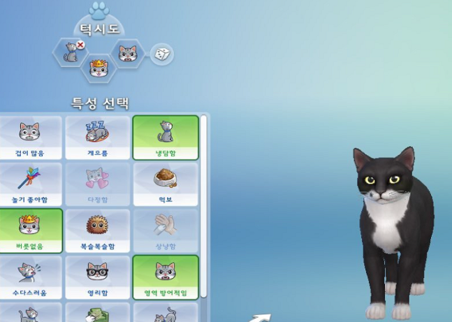
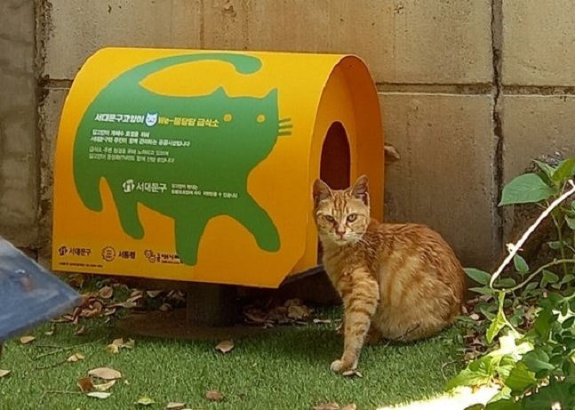
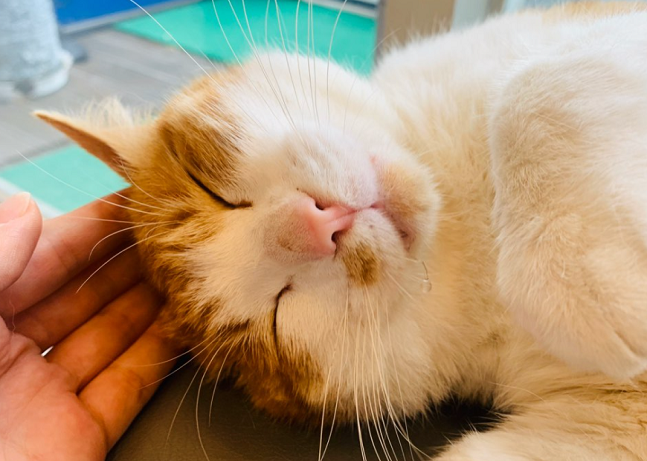
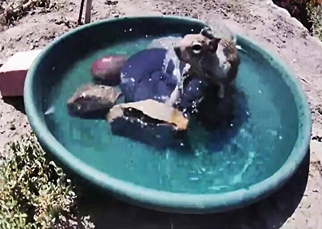

동물공감
게임 속 냥이 덕질하다 '레알 집사'된 이야기
반려동물을 안 키워 본 사람과 스마트폰에 게임이 단 하나도 깔려 있지 않은 사람. 요즘 시대에 둘을 비교하면 누가 더 적을까? 아마도 후자이지 않을까. 이제는 '요즘'이라는 말을...
동그람이
|

동물공감 게임 속 냥이 덕질하다 '레알 집사'된 이야기 반려동물을 안 키워 본 사람과 스마트폰에 게임이 단 하나도 깔려 있지 않은 사람. 요즘 시대에 둘을 비교하면 누가 더 적을까? 아마도 후자이지 않을까. 이제는 '요즘'이라는 말을... 동그람이 |
|

동물공감 동네 토박이 고양이와의 '예쁜 공존'을 꿈꾸다 서동행(서대문구 길고양이 동행본부) 서대문구 길고양이 동행본부(이하 서동행, 대표:조은영)는 동네 고양이의 가디언(guardian:후견인 혹은 수호자)을 자처하는 서대문구 주민... 야옹이신문 |
|

동물공감 왕따 당했지만 여전히 해맑은 '장미' 다른 길고양이들에게 공격당하고 다쳐서 구조가 된 노랑둥이 장미 얼마나 개냥인지 진료 오시는 소님들 무릎에 올라가서는 내려오지 않겠다고 아웅 자는것도 이쁘지 사람 손만... 정마온니 |
|

동물공감 마당에 '이것' 뒀다가 동물들의 핫플 됨 온갖 야생동물들이 분수대에서 물을 즐기는 장면이 카메라에 포착됐다.마당으로 찾아오는 야생동물들 지난 26일 해외 온라인 커뮤니티 보어드판다의 보도에 따르면 캘리포니아... 레드피피 |